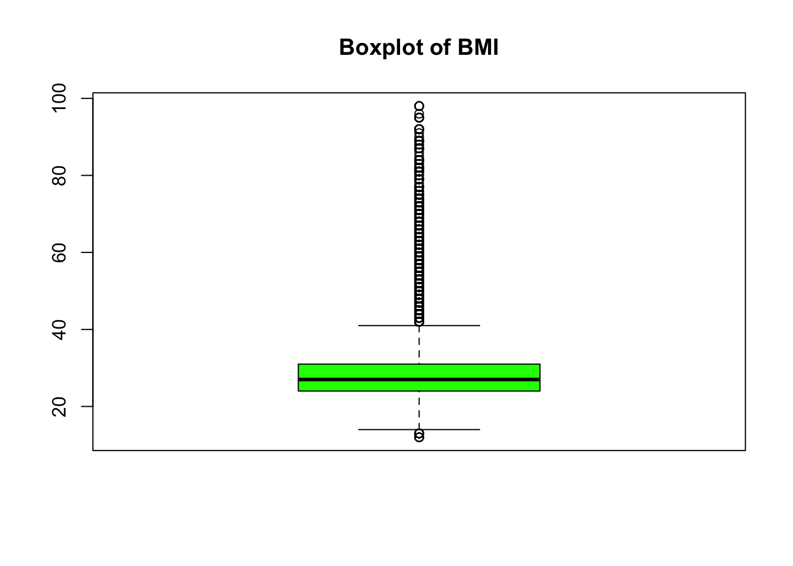
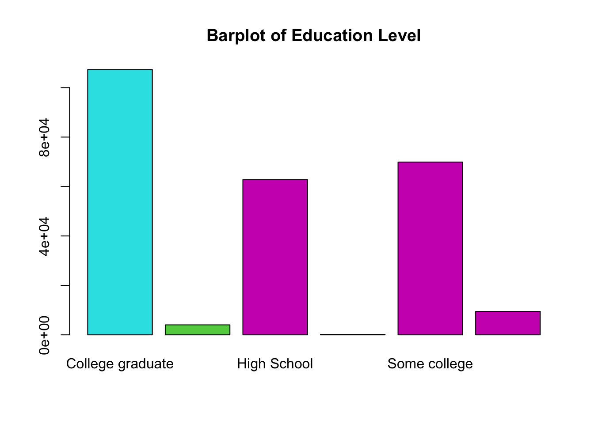
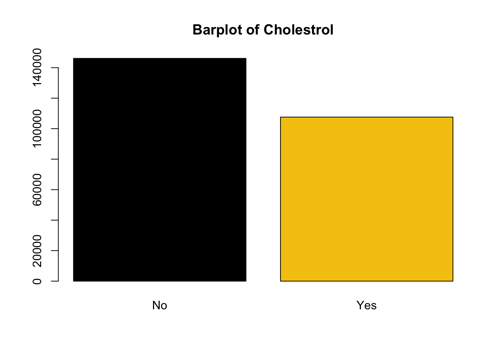
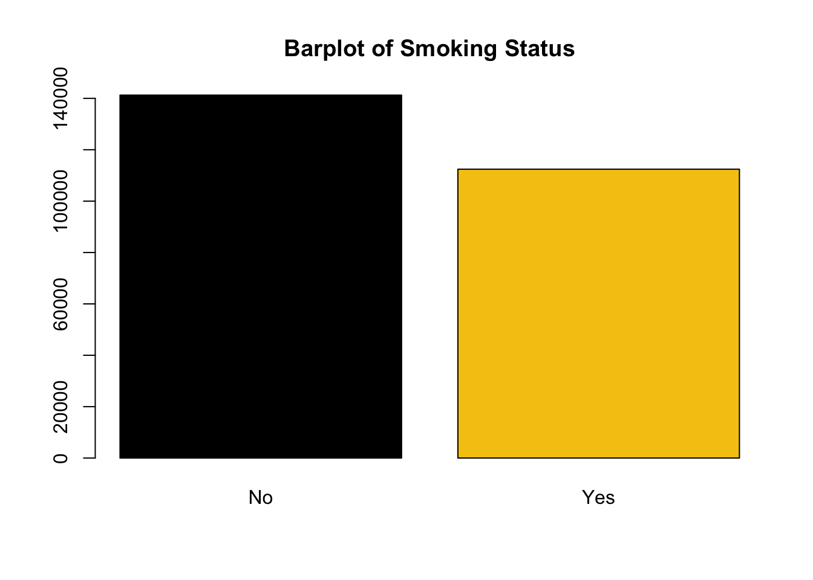
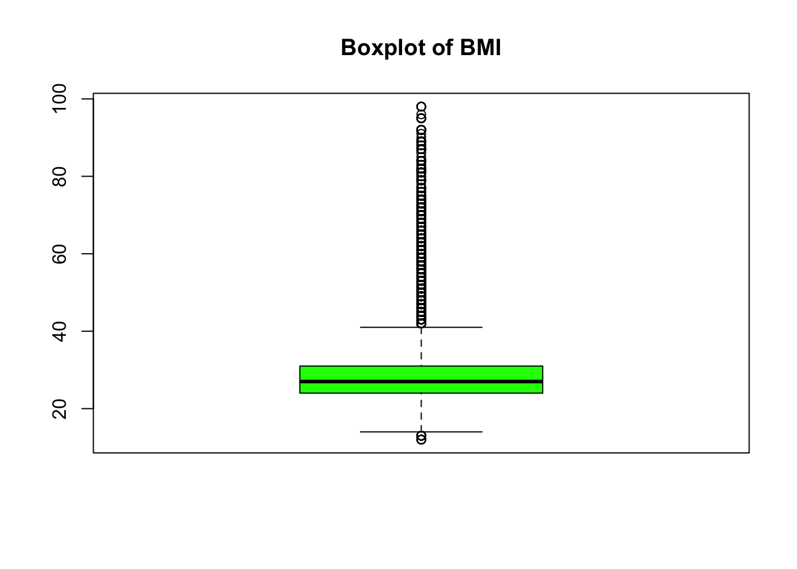
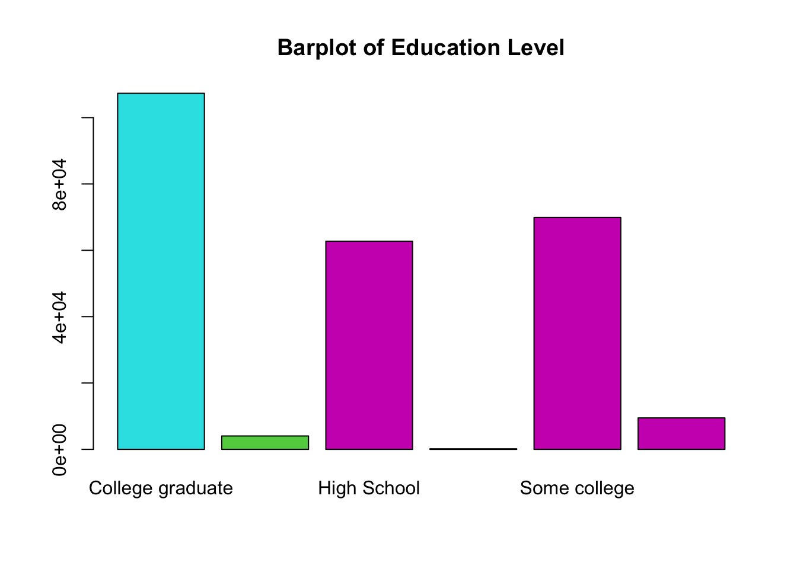
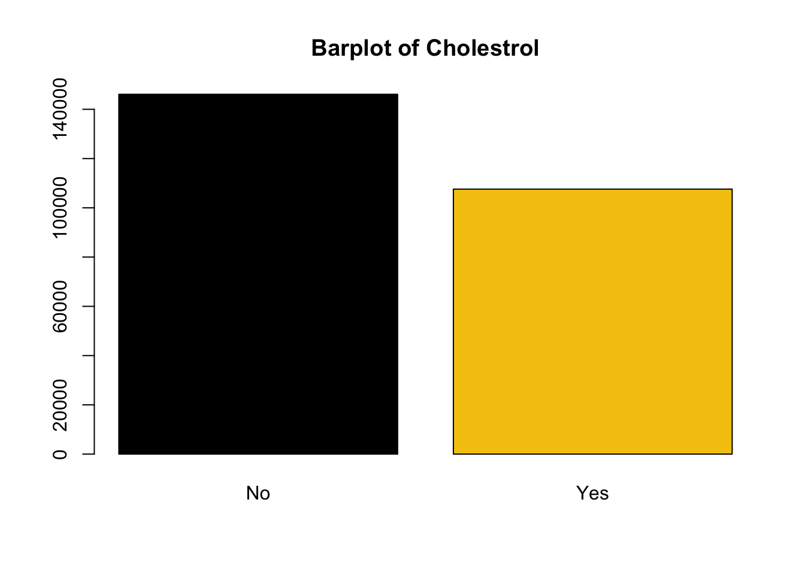
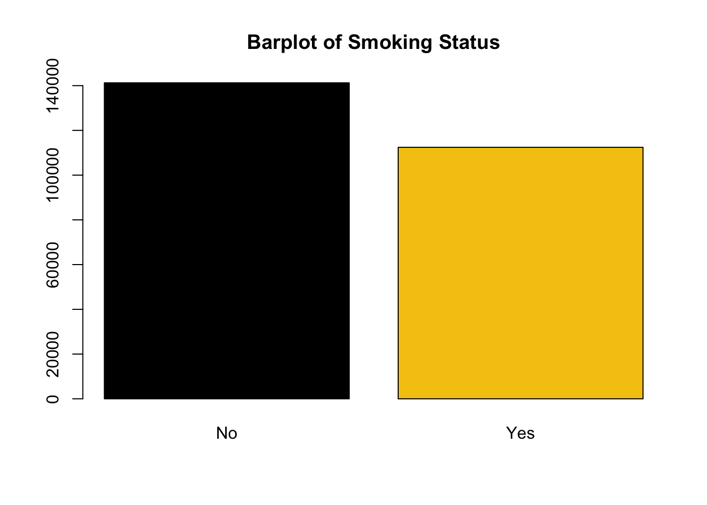

Test jay
Which health indicator have a greater association with heart disease?
INTRODUCTION: The Centers for Disease Control and Prevention (CDC) list heart disease as the leading cause of death in the United States. The goal of this analysis is to find out which health indicators are associated heart disease and will potentially be useful in predicting whether or not someone develop heart disease. Our dataset is a subset of data collected from the CDC’s 2015-Behavioral Risk Factor Surveillance System (BRFSS), a telephone survey used to collect data on the health and condition of the residents of the United States of America. The data contains the binary outcome of heart disease or heart attack status along with different health indicators that could be useful in predicting heart disease, such as BMI, smoking status, and age. Most of the health indicator variables have binary responses to a health status or condition, with BMI being the quantitative variable in the data.
METHODS: The dataset was obtained from Kaggle and it is a subset of data from the 2015 CDC’s telephone survey across the 50 states. The dataset used only includes health indicators that might be useful for predicting heart disease status across the nation. The dataset was downloaded and read in as a CSV file and the dimensions, header, and footer were all checked to ensure the data was properly displaying. The str function was used to look at the structure of the data and see that all of variables are numerical values. The summary function allows us to take a closer look at the variables and see the summary statistics of each variable and any missing values that might occur in the data. No missing values are observed and most variable are binary-categorical variables. All numerical-categorical variables are transformed using ifelse statements to their corresponding category using the Kaggle legend to make the responses more intuitive. The clean dataset was then restricted to variables that would seem to have an association including the new character variables and BMI(duplicates were removed). Exploratory data analysis was run on variables of interest and it is noted that BMI has a max of 98. A BMI of 98 seems to be a suspicious value because most BMI charts only list 30 and above as the highest BMI category. Using medical journals, I was able to verify that BMI values can exceed 100, but the majority of people do not fall into that category. Additionally, I calculated the proportion of individuals that had a BMI greater than 40 in our dataset was 4% and those greater than 50 was 0.8%, so it seems to be reasonable that these BMI values are not errors and will be included in our analysis. Exploratory graphs were created for variables of interest using ggplot and summary tables were created using summarize and kable function.
Dimensions of dataset: 253680 x 22 Header/Footer data is displaying correctly All variable types are numerical Summary tells us dataset is well-maintained; no missing values BMI max is 98,which is questionable
Take a look at non-binary variable and see that they are categorical, but need to use Kaggle legend to transform into corresponding catagories
Using ifelse statements to transform variables into new character variables instead of numerical values for clearer responses(values obtained for kaggle legend for data) Clean and resitrict data into new dataset “pred’
Exploratory Analysis
BMI values greater than 40 seem suspicious, but have been externally validated to exist only 4% of our dataset has BMI greater than 40 and only 0.8% are greater than 50.
| proportion_of_BMI_greater40 | proportion_of_BMI_greater50 |
|---|---|
| 0.0452499 | 0.0085738 |
Taking a look at the distribution of our variables.
These plots shows the distributions of the variables showing the range of the different responses in each variable.




Data Visualization
The histogram, violin plot, and boxplot show how BMI is distributed between Heart disease status. The mean BMI for individuals with heart disease is higher than those without, showing there is a possible association. The scatterplot shows us that the sample size for heart disease status group is not the same so results maybe be skewed. The mean and sample size for each group is show in the table below, which confirms my conclusion.
`stat_bin()` using `bins = 30`. Pick better value with `binwidth`.| HDorAttack | n | BMI_mean |
|---|---|---|
| No | 229787 | 28.26962 |
| Yes | 23893 | 29.46662 |
The barplot show how Age is distributed between Heart disease status. The heart disease increases with age showing that there might be an association between age and heart disease. The table below also shows that as age increases the proprtion in each age categories who have heart disease increases.
| Age 18 to 24 | Age 25 to 29 | Age 30 to 34 | Age 35 to 39 | Age 40 to 44 | Age 45 to 49 | Age 50 to 54 | Age 55 to 59 | Age 60 to 64 | Age 65 to 69 | Age 70 to 74 | Age 75 to 79 | Age 80 or older | |
|---|---|---|---|---|---|---|---|---|---|---|---|---|---|
| No | 0.9949123 | 0.9928929 | 0.9886721 | 0.9860378 | 0.9782757 | 0.9640749 | 0.9458463 | 0.9269266 | 0.8989893 | 0.8697583 | 0.8322781 | 0.8064456 | 0.7604677 |
| Yes | 0.0050877 | 0.0071071 | 0.0113279 | 0.0139622 | 0.0217243 | 0.0359251 | 0.0541537 | 0.0730734 | 0.1010107 | 0.1302417 | 0.1677219 | 0.1935544 | 0.2395323 |
The barplot show how gender is distributed between Heart disease status. The heart disease rates are higher for male than female showing that there might be an association between gender and heart disease. The table below also shows that as males are at an increased risk for heart disease.
| Female | Male | |
|---|---|---|
| No | 0.9281206 | 0.8774641 |
| Yes | 0.0718794 | 0.1225359 |
The barplot show how Education level is distributed between Heart disease status. The heart disease status seems to be less prevalent in individuals with college degrees, but the effect does not seem to be as impactful in the No school/Elementary school categories showing that there might be an association between increased education level and heart disease. The table below also shows that for the most part as education increases the proportion heart disease decreases.
| College graduate | Elementary | High School | No school | Some college | Some High School | |
|---|---|---|---|---|---|---|
| No | 0.9340042 | 0.8075686 | 0.881004 | 0.8333333 | 0.9010442 | 0.8292889 |
| Yes | 0.0659958 | 0.1924314 | 0.118996 | 0.1666667 | 0.0989558 | 0.1707111 |
The barplot show how income level is distributed between Heart disease status. The heart disease status seems to be less prevalent in individuals with higher incomes, but the effect does not seem to be as impactful in the lower income categories showing that there might be an association between increased income level and heart disease. The table below also shows that for the most part as income increases the proportion heart disease decreases.
table(pred$Income_cats)
| $75,000 or more | Less than $10,000 | Less than $15,000 | Less than $20,000 | Less than $25,000 | Less than $35,000 | Less than $50,000 | Less than $75,000 | |
|---|---|---|---|---|---|---|---|---|
| No | 0.9492726 | 0.8417083 | 0.8135449 | 0.8425034 | 0.8595481 | 0.8778735 | 0.9000274 | 0.9212383 |
| Yes | 0.0507274 | 0.1582917 | 0.1864551 | 0.1574966 | 0.1404519 | 0.1221265 | 0.0999726 | 0.0787617 |
The barplot show how blood pressure level is distributed between Heart disease status. The heart disease seems to be less prevalent in individuals without high blood pressure showing that there might be an association between increased high blood pressure level and heart disease. The table below also shows that for the proportion of individuals with heart disease also had high blood pressure.
| No | Yes | |
|---|---|---|
| No | 0.9588198 | 0.8352645 |
| Yes | 0.0411802 | 0.1647355 |
The barplot show how cholesterol level is distributed between Heart disease status. The heart disease seems to be less prevalent in individuals without high cholesterol showing that there might be an association between increased high cholesterol levels and heart disease. The table below also shows that for the proportion of individuals with heart disease also had high blood cholestrol.

| No | Yes | |
|---|---|---|
| No | 0.9511257 | 0.8442899 |
| Yes | 0.0488743 | 0.1557101 |
The barplot show how stroke status is distributed between Heart disease status. The heart disease seems to be less prevalent in individuals without a stroke showing that there might be an association between strokes and heart disease. The table below also shows that for the proportion of individuals with heart disease also had a stroke.
| No | Yes | |
|---|---|---|
| No | 0.9180075 | 0.6174699 |
| Yes | 0.0819925 | 0.3825301 |
The barplot show how smoking status is distributed between Heart disease status. The heart disease seems to be less prevalent in individuals who do not smoke showing that there might be an association between smoking and heart disease. The table below also shows that for the proportion of individuals with heart disease also were smokers.
| No | Yes | |
|---|---|---|
| No | 0.935635 | 0.8683454 |
| Yes | 0.064365 | 0.1316546 |
The barplot show how exercise status is distributed between Heart disease status. The heart disease seems to be less prevalent in individuals who exercise showing that there might be an association between exercising and heart disease. The table below also shows that for the proportion of individuals with heart disease also were not exercising.
| No | Yes | |
|---|---|---|
| No | 0.8608646 | 0.9202793 |
| Yes | 0.1391354 | 0.0797207 |
The barplot show how heavy alcohol use status is distributed between Heart disease status. The heart disease seems to be more prevalent in individuals who do not drink showing that there might be an association between heavy alcohol use and heart disease. The table below also shows that for the proportion of individuals with heart disease also were also not drinkers, but this could be caused by low sample size in heavy drinker category.
| No | Yes | |
|---|---|---|
| No | 0.9037482 | 0.9405163 |
| Yes | 0.0962518 | 0.0594837 |
The barplot show how fruit eating status is distributed between Heart disease status. The heart disease seems to be less prevalent in individuals who eat fruit showing that there might be an association between eating fruit and heart disease. The table below also shows that for the proportion of individuals with heart disease also were not eating fruit.
| No | Yes | |
|---|---|---|
| No | 0.8982022 | 0.910204 |
| Yes | 0.1017978 | 0.089796 |
The barplot show how vegetable eating status is distributed between Heart disease status. The heart disease seems to be less prevalent in individuals who eat vegetables showing that there might be an association between eating vegtebales and heart disease. The table below also shows that for the proportion of individuals with heart disease also were not eating vegetables.
| No | Yes | |
|---|---|---|
| No | 0.8820837 | 0.9113296 |
| Yes | 0.1179163 | 0.0886704 |
The barplot show how diabetes status is distributed between Heart disease status. The heart disease seems to be less prevalent in individuals who do not have diabetes or are bordline showing that there might be an association between diabetes and heart disease. The table below also shows that for the proportion of individuals with heart disease also were diabetic.
| Diabetes | No Diabetes | Pre-diabetes or borderline diabetes | |
|---|---|---|---|
| No | 0.7771176 | 0.9281667 | 0.8566184 |
| Yes | 0.2228824 | 0.0718333 | 0.1433816 |
CONCLUSION: As we expected the health indicators seemed to be associated with heart disease. For the most part all the variables that seem to put you in a healthier category showed a decrease in heart disease. Although, the data did seem to have an exception were we show that an increase in heavy use of alcohol showed a decrease in heart diease, but this trend need more research because the data might have been skewed due to small sample size in the heavy use alcohol category. All variables seemed to be associated with heart disease and deserve to be furthered studied, but from the list of variables of interest heavy use of alcohol and fruit eating status seemed to be the least associated between the variables.